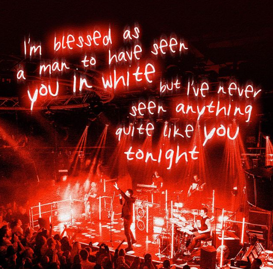
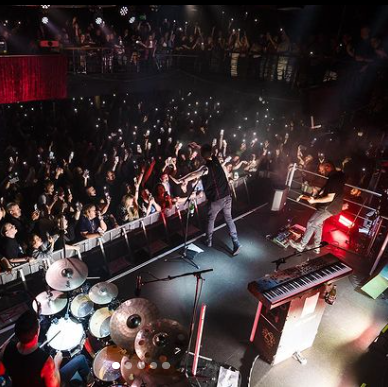
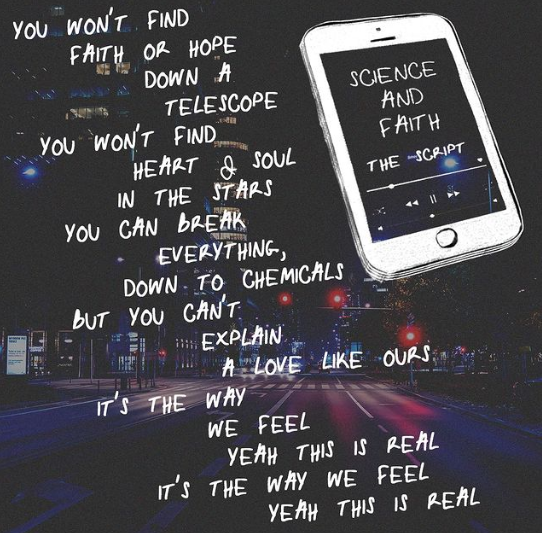

The Script is an Irish rock band formed in 2001 in Dublin, by lead vocalist, keyboardist, guitarist Danny O'Donoghue, lead guitarist Mark Sheehan and drummer Glen Power. The band moved to London after signing to Sony Label Group imprint Phonogenic and released their first album The Script in August 2008, preceded by the debut single "We Cry" as well as other singles such as "The Man Who Can't Be Moved", "Breakeven" and "Before the Worst". The album peaked at number one in both Ireland and the UK. Their next three albums, Science & Faith (2010), (2012) and No Sound Without Silence (2014), all topped the album charts in Ireland and the UK, while Science & Faith reached number two in Australia and number three in the United States. Some of the hit singles from the albums include "For the First Time", "Nothing", "Hall of Fame" and "Superheroes". The band's fifth studio album, Freedom Child, was released on 1 September 2017, and features the UK Top 20 single "Rain". Their sixth studio album, Sunsets & Full Moons, was released on 8 November 2019, and features the single "The Last Time". A Greatest Hits album was released on 1 October 2021.